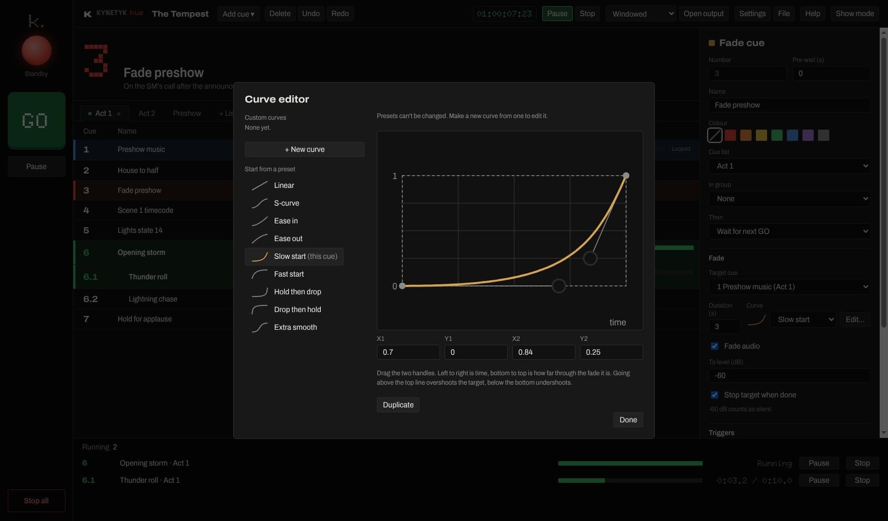
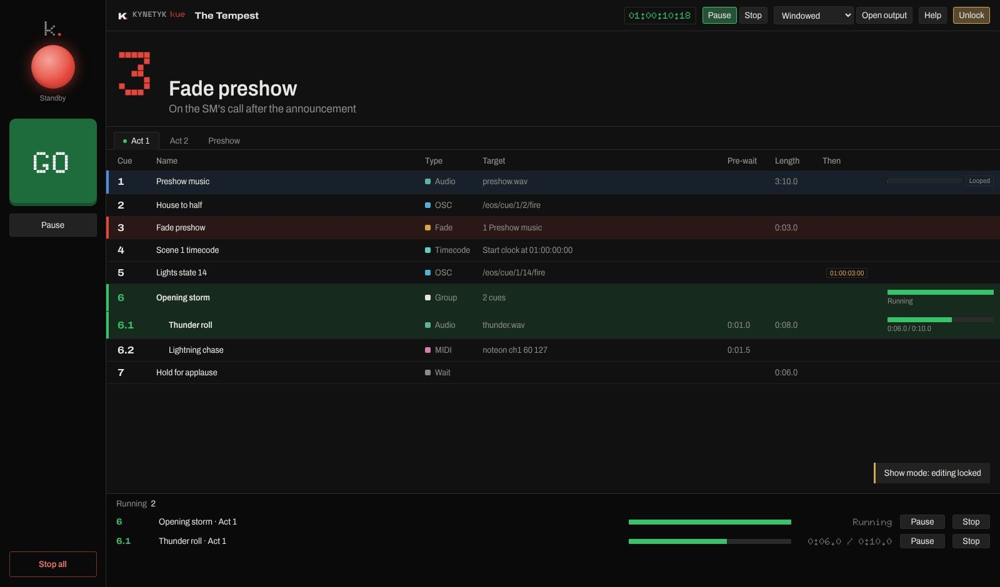
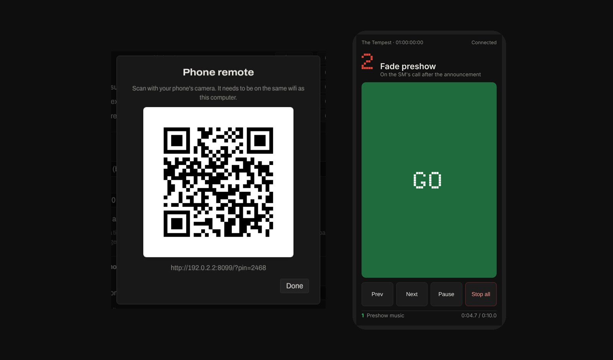

Newmapp is out, and vyz and rakk now send straight to it. Every app is ready to download.
Software for live shows.
KYNETYK makes tools for theatre, live events and visual performance. Calm, readable and dependable on the night. Eight apps are out now, and they all work together.
One family, built to work together.
Each tool does one job well, and they talk to each other: cue your visuals from kue, sync them to dekk's tempo, keep it all on one clock with kode, and patch the lot together in lynk.
Run the whole show from one GO.
Show control for theatre and live events. Audio, video, OSC, MIDI and timecode in one cue list. Free for Windows, macOS and Linux.
Audio, video, OSC and MIDI
Build one cue list for everything. Pre-waits, groups, auto-continue and auto-follow chain cues into sequences you fire with a single GO.
Fades you can draw
Nine curve presets, or shape your own in the curve editor. Fade sound and picture separately, and see each fade-in on its progress bar.
Timecode in and out
Chase MTC or LTC, or run the built-in clock. Trigger any cue at a time, and send MTC on to the desk or media server.
Fire it from anywhere
MIDI learn for pads and foot pedals, OSC in from your desk, and a phone remote you open by scanning a QR code.
Safe on show night
Show mode locks editing. Pause everything, undo anything, and get warned about missing media before the house opens.
Moves with you
Bundle a show and all its media into one folder. Runs on Windows, macOS and Linux, and in the browser for quick edits.
Take a closer look




Fire cues with GO. Running cues light green, standby sits in red, and the dot-matrix readouts stay legible from across the room.
Four keys run the night.
Everything else stays out of the way. Show mode hides the editor and makes the standby display and Go key bigger.
Free. Properly free.
Every KYNETYK app costs nothing and every feature is in. If they help your shows, a donation keeps development going and new apps coming.
- kue, vyz, mapp, kode, konv, dekk, lynk and rakk
- Every feature in, no trials
- No account needed
- Windows, macOS and Linux
About KYNETYK
KYNETYK is a one-person studio. Every tool is designed and built by a solo developer who has spent years running video, LED and projection for live shows. The aim is simple: show software that's affordable, honest about what it does, and steady when the lights go down. More about KYNETYK